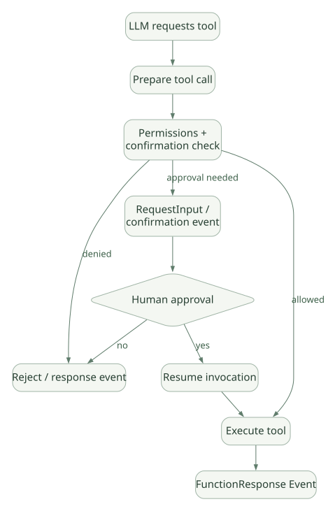

SECOND STUDY / 협업·Graph·복구
협업·Graph·복구
이번 단원의 읽는 관점
기존 패턴·AgentTool·Transfer와 새 Graph 실행의 Trigger·Scheduler·Checkpoint를 연결합니다.
살펴볼 경계deprecated의 잔여 제약, Resume·Replay·Retry와 미완료 복원 범위를 확인하세요.
이 페이지의 세부 목차
26. Workflow의 Checkpoint는 ‘완전한 프로세스 스냅샷’인가?#
아니다. Checkpoint가 의미하는 것은 어떤 노드가 완료·대기·중단되었는지 재개에 필요한 정보를 보존하는 것이지, Python 프로세스의 모든 변수·스레드·열려 있는 DB 연결·외부 API 상태까지 그대로 저장한다는 뜻이 아니다.
[SRC] Workflow._emit_node_checkpoint는 resumable Invocation일 때 Node별 status 및 interrupts를 담은 상태 Event를 생성한다. 보안상 resume_inputs의 자격증명 값을 상태 스냅샷에 그대로 넣지 않는다는 설명이 소스에 있다. 재개 시 관련 입력은 Session Event에서 복구하도록 설계되어 있다. [S10, 약 641–673행]
[SRC] 코드에는 scan_workflow_events를 통한 이벤트 기반 복원과 # TODO: resume from checkpoint event 주석이 함께 존재한다. 따라서 Checkpoint Event를 기록하는 기능과 모든 경로를 Checkpoint만으로 완전 복원하는 구현을 같은 수준으로 설명하면 안 된다. [S10]
Replay와 재실행의 구분#
| 용어 | 의미 | 주의점 |
|---|---|---|
| Resume | 이전 실행 식별자/상태로 이어 시작 | 어디까지 완료됐는지 파악해야 함 |
| Replay | 저장된 Event/Output로 이전 단계를 빠르게 지나감 | 외부 API 작업을 재생하는 것과 다름 |
| Retry | 실패한 Node/Tool을 다시 실행 | side effect 중복 가능 |
| Checkpoint | 중간 실행 상태를 기록 | 외부 프로세스 전체 Snapshot 아님 |
| Rewind | 과거 Event 시점으로 논리 상태 복원 | 외부 DB 변경 자동 롤백 아님 |
[DOC/R03] v2.9.0 릴리스에서는 실패한 Workflow Node가 Resume 시 다시 실행되도록 하는 동작 변화가 명시되어 있다. 따라서 Tool/Node에서 외부 부작용을 발생시키고 응답 기록 전 실패한다면 같은 작업이 다시 수행될 수 있다. 멱등성 없는 외부 Tool은 위험하다.
27. HITL: 승인·중단·재개가 모델 프롬프트와 다른 이유#
“모델에게 실행 전에 승인을 구하라고 Instructions에 써 둔다”는 것은 보안상 충분하지 않다. 실제 승인이 필요한 경우 런타임이 Tool 실행 전에 판단하고, 승인 전 Tool을 호출하지 않아야 한다.
[SRC/DOC] ADK는 Tool Confirmation과 Workflow RequestInput 경로를 지원한다. BaseNode.run()은 RequestInput을 Interrupt Event로 변환하며, Tool 실행 경로는 Confirmation Gate 및 Callback을 통해 승인을 요구할 수 있다. [S05, S12, R02]
가로로 이동해서 읽을 수 있습니다. 도식 크게 보기 ↗

원문의 학습용 도식입니다. 연결 방향·분기 조건·점선·쌍방향 연결을 보존해 세로로 배치했습니다. 실제 구현·의사코드·해석의 구분은 본문을 함께 읽으세요.
도식 원문 보기 (Mermaid)
flowchart TD
FC[LLM requests tool] --> PREP[Prepare tool call]
PREP --> POLICY[Permissions + confirmation check]
POLICY -->|denied| STOP[Reject / response event]
POLICY -->|approval needed| PAUSE[RequestInput / confirmation event]
PAUSE --> HUMAN{Human approval}
HUMAN -->|no| STOP
HUMAN -->|yes| RESUME[Resume invocation]
RESUME --> RUN[Execute tool]
POLICY -->|allowed| RUN
RUN --> OUT[FunctionResponse Event]이 그림은 실행 개념도이다. Permission/Plugin/Tool Confirmation의 실제 평가 우선순위는 해당 Tool·Runner 경로의 콜백 호출 순서에서 확인해야 한다. RequestInput은 Graph Node에도 쓰이므로 모두 FunctionTool 승인으로 환원해서는 안 된다.
Tool 승인과 인증의 경계#
- 승인 전에도 Tool이 다른 서비스의 자격증명을 갖고 있으면 외부 API는 접근 가능할 수 있다. 승인 UI는 권한 관리의 대체물이 아니다.
- 승인 후 다시 모델을 실행할 때 이미 완료된 Tool이 재호출되는지 확인해야 한다.
- 같은 승인 토큰이 다른 Session/Invocation/Tool 인자에 재사용되지 않도록 앱 경계를 둔다.
- 외부 Tool에는 최소 권한, 서버 측 ACL, 입력 검증, 감사 기록을 적용해야 한다.